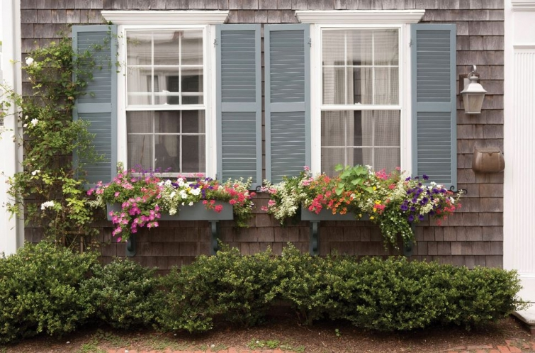

.png)
.PNG)
.PNG)
.PNG)
.PNG)
.PNG)
.JPG)
.JPG)
.PNG)
.PNG)


source
Don’t you just love window boxes?
They just seem to say cottage any place they are built.
Nantucket and all of Cape Cod certainly know how to dress them.
And if you really want over the top gorgeousness, the window box flower colors match the other flowers in the garden.
But New England does not have the entire market when it comes to them. I do believe Charleston gives them a run for the money in this department too. Take a look at these Southern charmers.

I had never even thought about putting ferns in them until I saw these.
Still staying in the South, this one in Birmingham adds so much charm to this painted shingle home.
And how about this beauty in Atlanta? I love ALL the details on this home’s exterior!
And don’t you think it is so pretty when shops have window boxes too?
If we could make a trip to Great Britain, we could enjoy the window boxes in Chelsea. I like the idea of simply putting flower pots on a shelf outside the window. That would make it tremendously easier to change out your plants.
And if we were to cross the English channel, we could see this charming street in the Channel Islands.
But there is still charm here in our own country. What do you think of this mint green window box on a log house?
Here is a sweet one with small boxwoods in it.
I had to include a holiday one to show you they can be effective in the winter.
I am sure you have heard the recipe for a great window box is mix equal parts “spiller, thriller, and filler.” The spiller of sweet potato vine is the thriller for me in this next one.
And oh my goodness at all the geraniums in this one! So many you cannot even see the boxes that hold them.
In our previous home, my husband built window boxes on our children’s playset (which was kind of a combination treehouse/playhouse building.) That’s as close as we have come to having any window boxes. I would love to add some here, one below the upstairs window over the porch and one outside the kitchen window. The kitchen one could look a lot like this next one (just the window box – not the fountain/birdbath.) 🙂
One last thing before you go. I wanted to let you know the winning entry from all your sweet comments on the gardening posts was this one:
Congratulations Amy! If you will email me your mailing address, I will get in touch with the wonderful people at Timeless Settings. Then your beautiful crate of pots and lovely box of herb markers will be on its way to you.
Now for the rest of you, don’t feel bad. I have at least two more giveaways coming for you this summer. 🙂 So please come back and visit here. I will leave you with a photo that shows you a window box, some lovely landscaping, and an area for outdoor entertaining!
Enjoy your day…whether you are working in the garden, sitting behind a computer, or just goofing off. 🙂
Until next time…


.PNG)
[…] 1 | 2 | 3 | 4 | 5 | 6 | 7 | 8 | 9 […]
[…] entertains. Kelly does a fantastic job sharing wonderful places to visit, things to do, and in this particular post, shared 21 beautiful window boxes. One of the homes she featured caught my attention and I left my comment with Kelly and went to […]
What a beautiful post, thanks for sharing!!! I now have an idea what I would like for my husband to build this would give my house the extra “umph” I think it needs! Once again, I could spend hours on your blog…….sipping coffee and seeing simple beauty.
———————————————————————–
Thank you for reading and commenting Jennifer! I am sure there are plenty of husbands out there who wish bloggers would quit sharing ideas since their wives seem to come up with more for the honey-do lists, right?! (My husband is right there in that bunch. 🙂 ) Window boxes shouldn’t be too hard to build, and they really do add such charm to a house.
Kelly
I am SO excited to be the winner for the Timeless Settings give-away for the pots and herb markers! What a delightful surprise! 🙂 When we remodeled my grandparents’ farmhouse, one of the main things I wanted was window boxes under the windows across the front of the house. My brother-in-law built us some, and I have enjoyed planting and changing them out through the seasons over the years. During the holidays, I fill them with magnolia leaves, holly berries, and other greenery. Right now, they are empty–just waiting to be filled. Usually I do petunias in the summer, but this year, I may go with geraniums!
Again, so excited to be the winner! Thanks so much for the wonderful opportunity! Happy Summer!
Blessings,
Amy
Hi Kelly, Wow, I’ve been thinking about my window boxes since the pansies are done. Maybe I’ll try some fern since they’re in the shade. Thanks for the inspiration! Have a great day too.
These are so lovely. Another place that has beautiful window boxes is Germany. The weather there makes them so lush and doesn’t stress the plants
Ike our southern weather does!
There’s a lot of gardening going on here. Love the many window boxes you’ve posted Kelly. I am partial to the Nantucket ones. I have several and mine are adorned with red and white petunias, asparagus fern, and geranium. Love the last picture. I love the potted boxwood, wire window box and wood patio set. That is definitely my taste. Oh, so pretty. Well, congrats to Amy. You lucky gal!
Debra
Hi Kelly: Absolutely beautiful! Such inspiration. I certainly hope you get that lovely window box by the kitchen, and all the other spots you desire. I think it will happen and you will be posting it shortly:-) How’s that for positive thinking:-) Loved the red white and blue ones.
Blessings…..Gail
I loved the red white and blue window box as I am doing a red white and blue front garden this year! And i loved the one from Italy. Eye candy for sure.
Congratulations to Amy! I have always loved window boxes, but have never had a home with any. Bummer! With the 4th just around the corner, I really liked the patriotic boxes. They were all lovely though.
every single one of those window boxes are breath-taking…i’d love to have any one of them. savannah has some lovely window boxes too.
i’d like to re-create the red, white and blue one for the 4th of july and leave it up all summer….if i can keep it alive in this heat!
hope you have a happy and productive weekend!
I love window boxes. I wish I had a good window to put some on. I saw a really neat one on Pinterest (where else) that was a board with holes cut into it to hold the pots. I really like that for the easy of changing the flowers and pots.
Kelly, the pictures reminded me of the many homes and buildings in Ireland that I saw two years ago. Breathtaking window boxes. I have always wanted them beneath our front windows above our boxwood. Thanks for sharing and giving inspirations.
Kelly,
I love window boxes. I don’t have a good spot for one at my own house, but I have a friend that has great success with 2 on the front of her home. They are always so pretty and welcoming. You’ve given us some really great examples here.
Enjoy the upcoming weekend, TGIF. =)
Karen
There is just something that seems so magical and fairytale about a window box. Love all of your fabulous inspiration pics.
Love the window boxes. Everyone of them are so beautiful. I love the idea of ferns in them. My backyard has a lot of shade so I think I could get by with putting a window box on my shed under the window with ferns in it. Thanks for the idea. So happy for Amy I know she will enjoy her treasures. What a lovely gesture of you and Timeless Settings. I haven’t ordered that tin yet. Still pondering over if I would really have the space for it. Oh how I love it so. Enjoy your day!!!!
I love window boxes of all varieties, though I have only had one. It was on an A-frame green house in New Braunfes, Tx. In many ways wish I had never left there. What a picturesque town.
Brenda
What a “balm to my soul ” this morning! Seeing these beautiful flower boxes was just what I needed. I loved all of them–especially the red, white and blue! I have my first one on my little shed with petunias and small US flags. I plan on changing them out for every season. These gave me som great ideas, Kelly. So happy for Amy — just know she will enjoy her prize! Wondering what you are up to next?!:) My friend in VA has a wooden fence with 3 old widow panes on it and flower boxes in front of each which she changes out each season– just lovely! I will be telling her to come look at your posting!
So much to love here! I can’t have windowboxes but love the look!!
I have always loved window boxes, so thanks so much for doing this post, Kelly. My favorites would probably have to be the red, white, and blue variety, although I would gladly take any of them! I agree about the Traditional Home exterior–I love it all! Have a great Friday!
Kelly,
I do like planter boxes. I have one off of our deck that I plant lavender in every year. I love lavender and it helps keep the mosquitos away. I would like another one that I could plant some herbs in. I don’t have a particular favorite from the ones above. They are all lovely and I never would have thought to put ferns in them until now. I have lots of ferns hanging around. I do like the mint green planter box for a lake house or cabin. Thanks for sharing these with us!
Hmmmm…some great ideas here for my window boxes. Very timely, thank you for sharing. I love the potato vine! It’s a great filler.
Congrats to Amy on the give away.
I Love these window boxes, I just wish all my flowers were so full and lovely as all of these. Last night I was just looking at the wall under our kitchen windows and that window box idea was such a good idea…something else to add to the “honey do list.”
Have a great weekend, Kelly.
What a feast for the eyes….thanks!